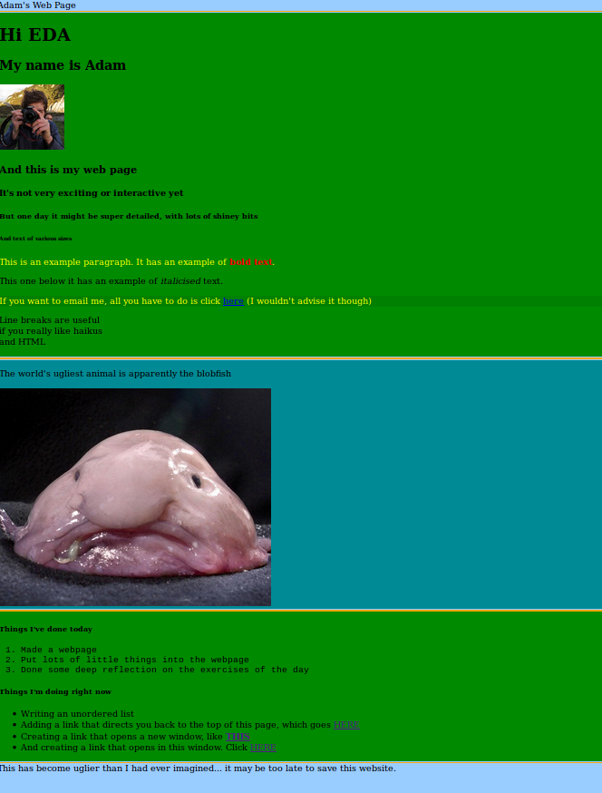
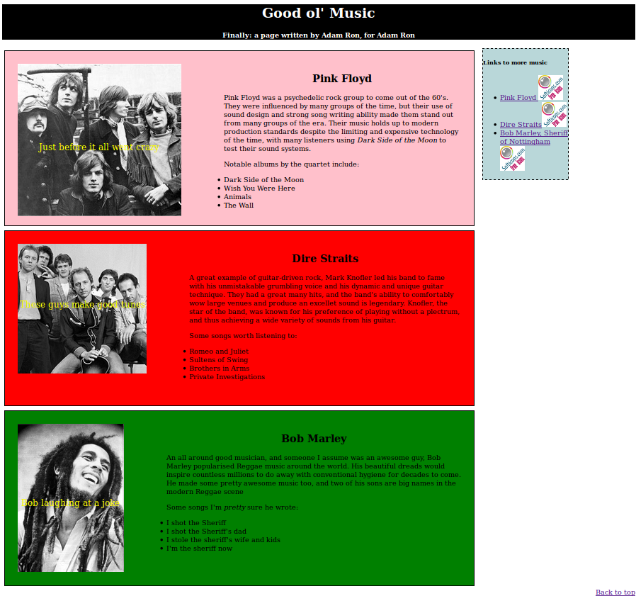
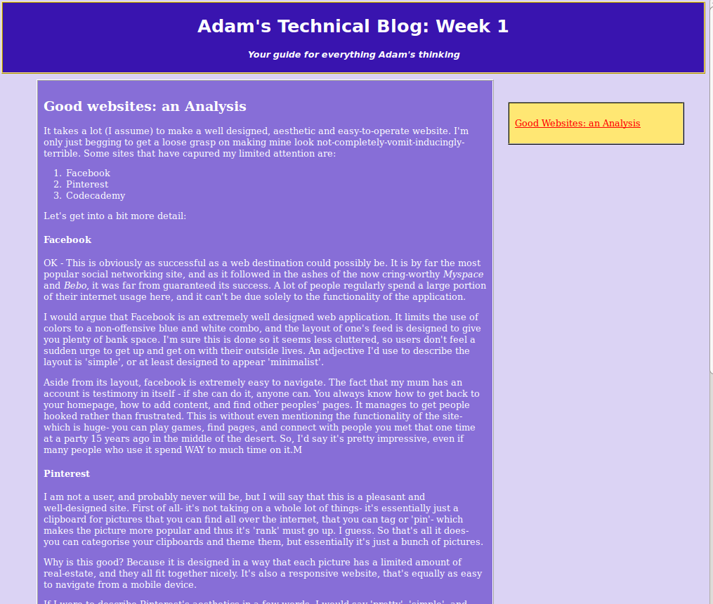
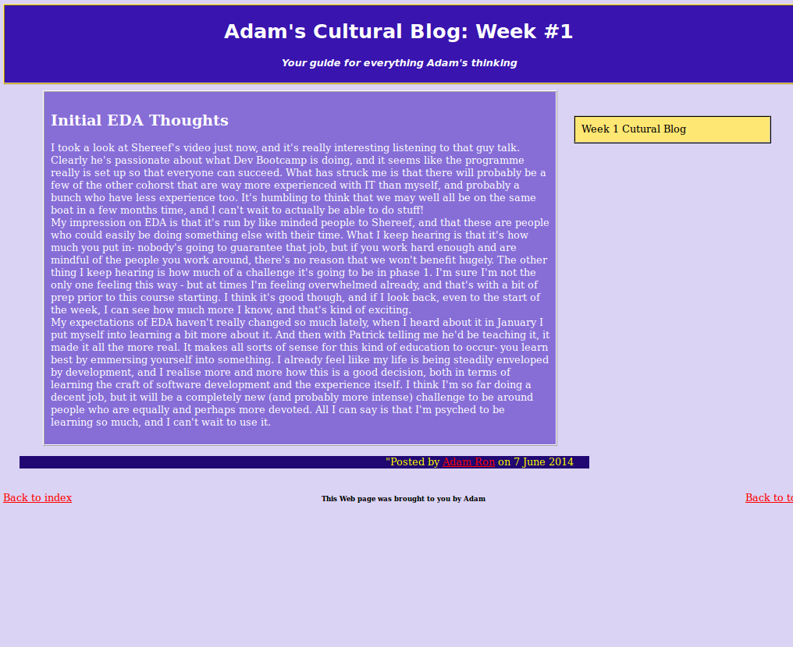
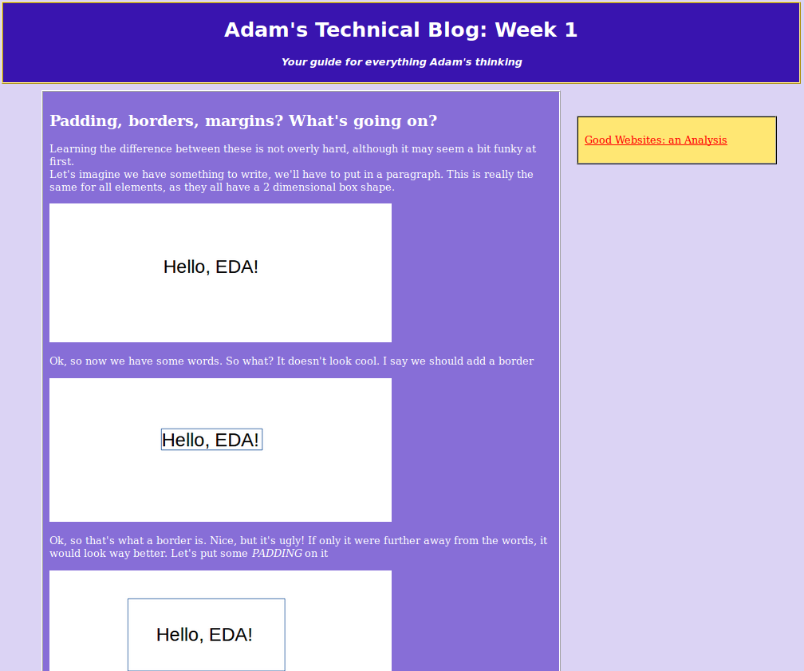
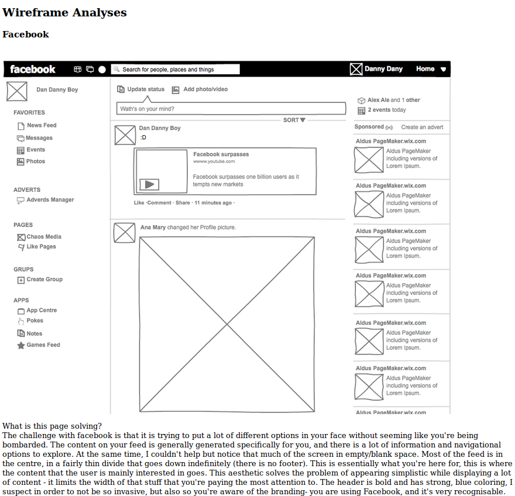
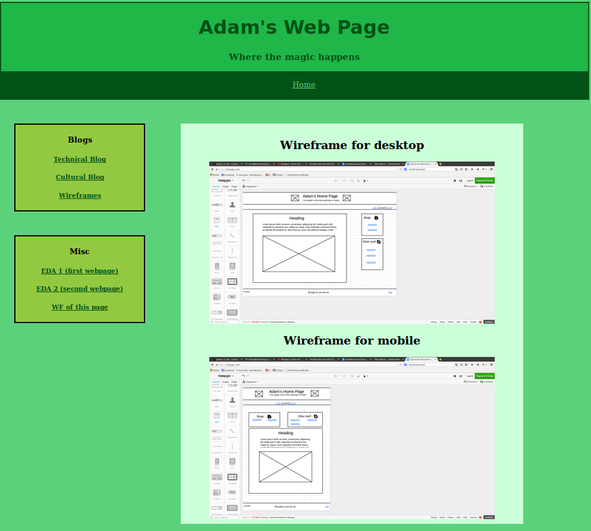
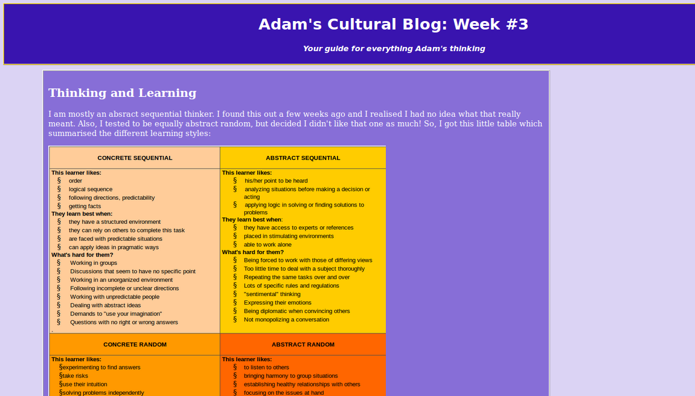
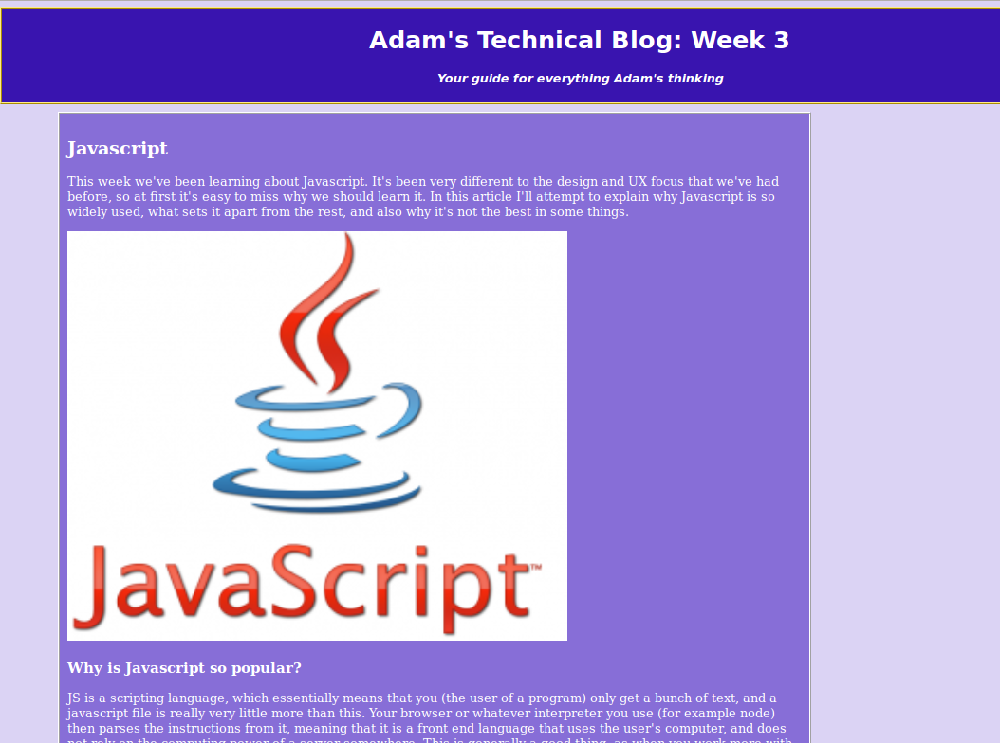

The content here isn't all that amazing, but it was good to see something I made up and running. Not much consideration for design, but it can only get better, right?
The task was to write about stuff that we like, so I decided to write a teeny bit about some of my favourite musical groups. By the end, I was getting a bit tired with making good content, but the real challenge for me was making it semi-presentable, and doing some CSS stuff. It doesn't look amazing, but I was pretty happy with it at the time.
This was my first-ever go at writing a blog, technical or otherwise. In this, I write about 3 websites that I use, and what about their design makes people like them. It's not that pretty, but as you can see, it's getting better!
In this blog, I write about my initial thoughts on what I thought EDA/Dev Bootcamp was all about (at the time of writing).
This was a quick guide of the differences between padding, margins and borders on html.css. Pretty basic content, but if it's something you're struggling with, I hope this provides clarity.
This was an exercise where I took some wireframes from the sites I had mentioned in my previous technical blog, and attempted to analyse them from a design perspective
This was my attempt at wireframing my own webpage. Utimately, I haven't gone with this design, as I ran with it for a bit and I felt like it didn't look very good at all.
This blog talks about my learning style, and how I should approach EDA considering this
This blog talks a little bit about Javascript, why we learn it, and what's good about it.
